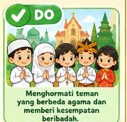
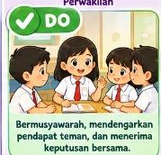
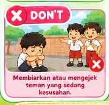
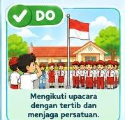
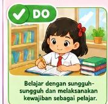
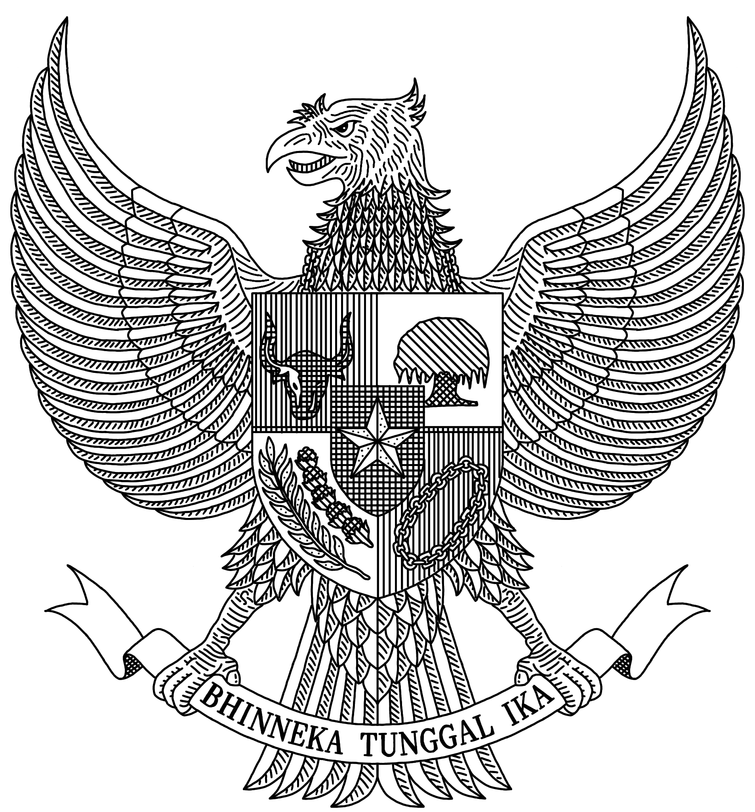
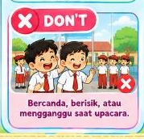

🦅 PROYEK MADING PANCASILA



Lambang Negara Kesatuan Republik Indonesia



• Warna: Kuning Emas Murni (*Golden Yellow*).
• Makna: Keagungan, kejayaan, dan keluhuran bangsa Indonesia.
• Arah Kepala: Menoleh ke kanan (*heraldic right*) melambangkan kebaikan, kebajikan, dan kebenaran.
• Jumlah Bulu Bersejarah:
- 17 helai pada masing-masing sayap.
- 8 helai pada ekor utama.
- 19 helai di bawah perisai / pangkal ekor.
- 45 helai pada leher.
➔ 17 - 8 - 1945 (Hari Kemerdekaan RI)!
• Bunyi: Ketuhanan Yang Maha Esa.
• Posisi: Tepat di Tengah Perisai (di atas perisai kecil hitam).
• Warna Bintang: Kuning Emas bersudut lima.
• Latar Belakang: HITAM (warna alam, melambangkan berkat cahaya rohani dari Tuhan YME).
• Bunyi: Kemanusiaan yang Adil dan Beradab.
• Posisi: Kuadran Kanan Bawah perisai.
• Warna Rantai: Kuning Emas berkait melingkar.
• Latar Belakang: MERAH.
• Makna Bentuk: Gelang lingkaran (perempuan) dan gelang persegi (laki-laki) saling terhubung kuat membela keadilan.
• Bunyi: Persatuan Indonesia.
• Posisi: Kuadran Kanan Atas perisai.
• Warna: Daun Hijau rindang lebat, batang dan sulur akar Cokelat.
• Latar Belakang: PUTIH (kesucian dan ketulusan persatuan).
• Makna: Tempat berteduh yang aman bagi seluruh rakyat Indonesia.
• Bunyi: Kerakyatan yang Dipimpin oleh Hikmat Kebijaksanaan...
• Posisi: Kuadran Kiri Atas perisai.
• Warna: Hitam pekat dengan tanduk putih kokoh.
• Latar Belakang: MERAH (keberanian bermusyawarah).
• Makna: Hewan sosial yang senang berkumpul untuk bermufakat.
• Bunyi: Keadilan Sosial bagi Seluruh Rakyat Indonesia.
• Posisi: Kuadran Kiri Bawah perisai.
• Warna: Butir Padi Kuning Emas di kiri, Bunga Kapas Putih berkelopak Hijau di kanan.
• Latar Belakang: PUTIH.
• Makna: Kebutuhan dasar rakyat Indonesia: Pangan (padi) dan Sandang (kapas).
🎗️ Garis Khatulistiwa & Pita Cengkeraman Kaki:
• Garis Hitam Tebal di Tengah Perisai: Garis horizontal hitam melambangkan Garis Khatulistiwa (Equator) yang melintasi kepulauan Indonesia dari barat ke timur.
• Pita Putih: Dicengkeram kuat oleh kedua kaki Garuda, bertuliskan huruf kapital tebal:
B H I N N E K A T U N G G A L I K A
• Artinya: Berbeda-beda tetapi tetap satu jua.
Warnai bulu dengan kuning emas, perisai dengan merah-putih, dan tempelkan 5 simbol di perisai dadanya:

Gunting 5 kotak di bawah ini, lalu tempelkan ke perisai dada Burung Garuda sesuai posisinya:
 1. Bintang Emas
(Tempel di Tengah)
1. Bintang Emas
(Tempel di Tengah)
 3. Pohon Beringin
(Kanan Atas)
3. Pohon Beringin
(Kanan Atas)
 4. Kepala Banteng
(Kiri Atas)
4. Kepala Banteng
(Kiri Atas)
 5. Padi & Kapas
(Kiri Bawah)
5. Padi & Kapas
(Kiri Bawah)
Gunting 10 kartu ini rapi, lalu tempelkan di dekat masing-masing simbol sila di kertas mading:

🎙️ Teks Presentasi Laskar:
1. Pembukaan:
"Assalamu'alaikum warahmatullahi wabarakatuh.
Selamat pagi Miss, Mister, dan teman-teman semuanya.
Perkenalkan, nama lengkap saya Laskar Al Kautsar (panggilan Laskar) dari kelas Grade 2 SD MISS Malang."
2. Memperkenalkan Mading:
"Hari ini saya sangat senang ingin mempresentasikan karya saya, yaitu Mading Pancasila: Aku Anak Pancasila.
Di bagian tengah ada Burung Garuda Pancasila berwarna kuning emas lambang kejayaan dan keagungan bangsa kita."
3. Menjelaskan 5 Simbol & Penerapannya (Sambil menunjuk gambar):
"Di dada Burung Garuda terdapat perisai dengan 5 simbol sila:
• Sila Pertama (Bintang Emas di tengah): Ketuhanan Yang Maha Esa. Contoh penerapannya adalah menghormati teman yang berbeda agama saat beribadah.
• Sila Kedua (Rantai Emas di kanan bawah): Kemanusiaan yang Adil dan Beradab. Contoh penerapannya adalah menolong teman yang sedang kesusahan.
• Sila Ketiga (Pohon Beringin di kanan atas): Persatuan Indonesia. Contoh penerapannya adalah tertib mengikuti upacara bendera dan menjaga persatuan.
• Sila Keempat (Kepala Banteng di kiri atas): Kerakyatan yang Dipimpin oleh Hikmat Kebijaksanaan... Contoh penerapannya adalah bermusyawarah dan mau mendengarkan pendapat teman.
• Sila Kelima (Padi dan Kapas di kiri bawah): Keadilan Sosial bagi Seluruh Rakyat Indonesia. Contoh penerapannya adalah rajin belajar dan tidak malas mengerjakan kewajiban sebagai pelajar."
4. Menjelaskan Semboyan & Penutup:
"Di cengkeraman kaki Burung Garuda ada pita bertuliskan semboyan Bhinneka Tunggal Ika, yang artinya berbeda-beda tetapi tetap satu jua.
Mari kita selalu terapkan nilai-nilai Pancasila dalam kehidupan sehari-hari!
Terima kasih atas perhatiannya. Wassalamu'alaikum warahmatullahi wabarakatuh!"
1. Tangan kanan menunjuk gambar di mading saat menyebutkan sila.
2. Tersenyum ramah dan tatap mata Miss, Mister, dan teman-teman.
3. Suaranya lantang, jelas, dan percaya diri! Laskar anak pintar kebanggaan Ayah & Bunda! ⭐